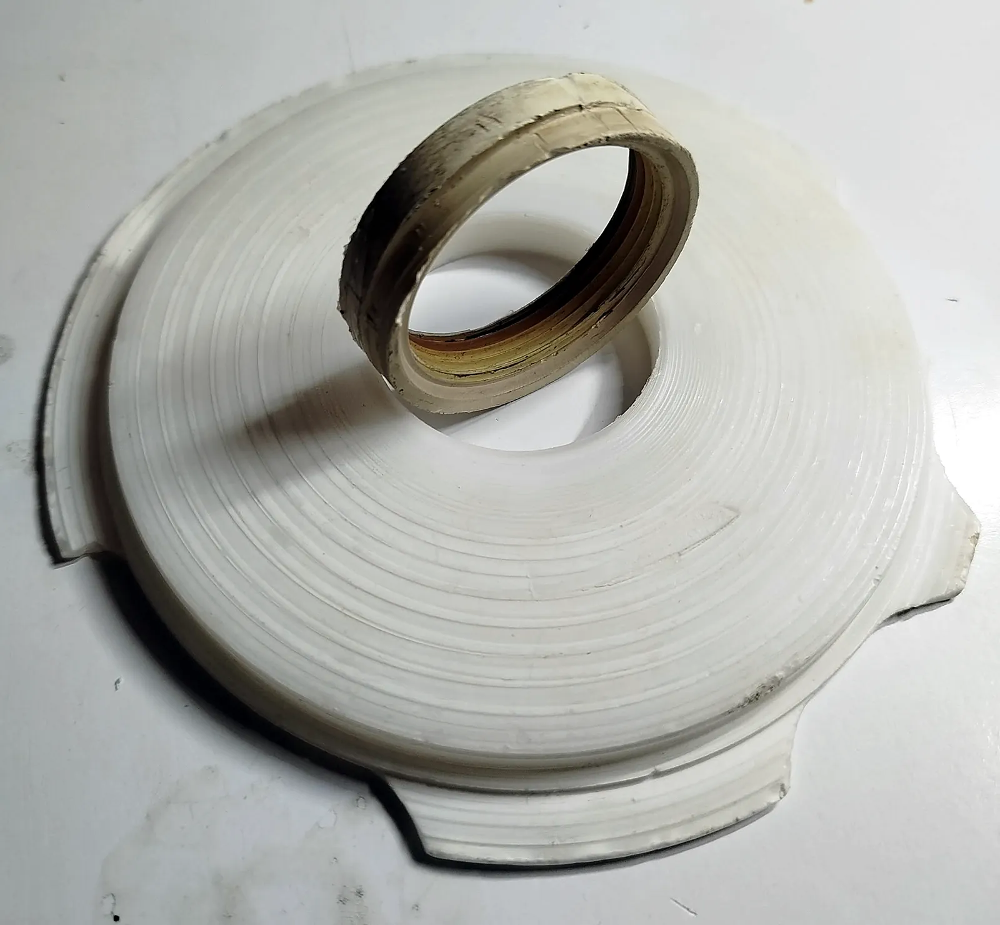
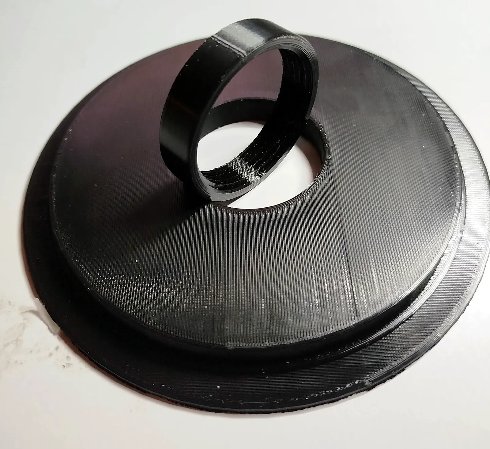
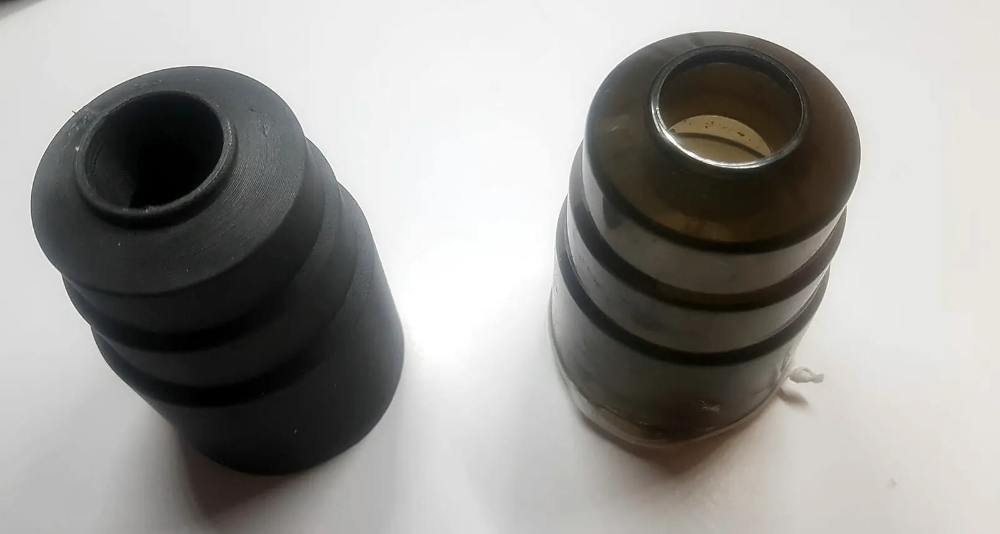
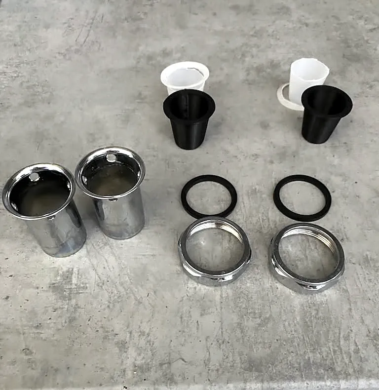

Tisk z vašeho modelu
Máte hotový model? Zkontroluji, jestli se dá dobře vytisknout, doporučím materiál a vytisknu ho.
- formáty STL, 3MF, OBJ i STEP
- PLA, PETG, ASA a flexibilní TPU
- jednotlivé kusy i menší série
3D tisk z vašeho modelu, náhradní díly podle starého kusu a prototypy. Tisknu ve vlastní dílně v Zádveřicích u Zlína.
Máte hotový model? Zkontroluji, jestli se dá dobře vytisknout, doporučím materiál a vytisknu ho.
Nemáte model, jen nápad nebo rozbitý díl? Navrhnu nový a vytisknu ho.
Tiskárna tiskne hůř, než by měla, nebo chcete víc výkonu? Poradím a nastavím.




Pošlete model, fotky dílu nebo popis problému. E-mailem můžete přiložit soubory.
Ozvu se obvykle do jednoho pracovního dne s dotazy, návrhem řešení a cenou.
Po vašem potvrzení modeluji a tisknu. U návrhů posílám průběžné náhledy.
Vyzvednete si ji osobně v Zádveřicích, nebo vám ji pošlu poštou či Zásilkovnou. Data k modelům posílám e-mailem.
Dlouholetá praxe s CAD systémy SolidWorks, Inventor, Fusion 360 a AutoCAD. Díl proto nejen vytisknu, ale umím ho i navrhnout tak, aby vydržel a dal se dobře vytisknout.
Vlastní stroje si stavím, upravuji a přestavuji na Klipper nebo Marlin. Proto vám umím poradit, co vaší tiskárně je, a nastavit jí firmware. Když něco přesahuje moje možnosti, řeknu to rovnou.
Od návrhu dílu přes tisk až po předání. Žádní prostředníci, komunikujete přímo s tím, kdo na zakázce pracuje.
Sepsal jsem krátkou wiki o tom, jak funguje FDM, SLA a SLS a co je G-kód. Je v ní i interaktivní simulátor ovládání tiskárny, do kterého můžete pustit ukázkový G-kód a sledovat tiskárnu při práci.
Pokud máte 3D model, pošlete ho e-mailem ve formátu STL, 3MF, OBJ nebo STEP. Když model nemáte, stačí fotky dílu z několika stran a hlavní rozměry. Nejpřesnější je přinést nebo poslat původní kus.
Ano, to je to, co dělám nejčastěji. Původní díl změřím, vymodeluji a vytisknu náhradu. U složitějších tvarů někdy vznikne nejdřív zkušební kus, aby nová součástka přesně seděla.
Podle použití. PLA je vhodné do interiéru, ale měkne už kolem 55 °C. PETG je houževnaté a snese vodu, hodí se třeba na díly k bazénu nebo do koupelny. ASA vydrží slunce a venkovní prostředí. TPU je pružné a hodí se na těsnění a tlumiče. Materiál vám doporučím podle toho, k čemu díl slouží.
Cena záleží na velikosti dílu, materiálu a času tisku, případně na modelování. Než začnu, pošlu vám nabídku s konečnou cenou. Nejsem plátce DPH, takže k ceně se nic nepřičítá.
Termín napíšu v nabídce. Záleží na velikosti dílu, na tom, jestli je potřeba ho nejdřív vymodelovat, a na vytížení tiskáren.
Osobně v Zádveřicích po telefonické domluvě, nebo vám ji pošlu Českou poštou či Zásilkovnou. Zaplatit můžete hotově při převzetí, nebo převodem na účet.
Napište mi, odpovídám obvykle do jednoho pracovního dne. Nebo rovnou zavolejte na +420 737 947 141.